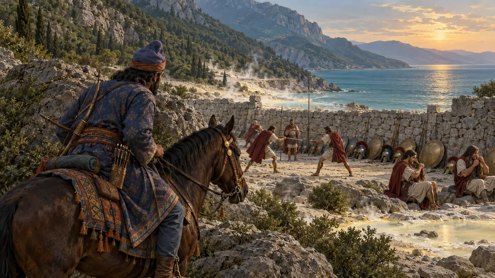
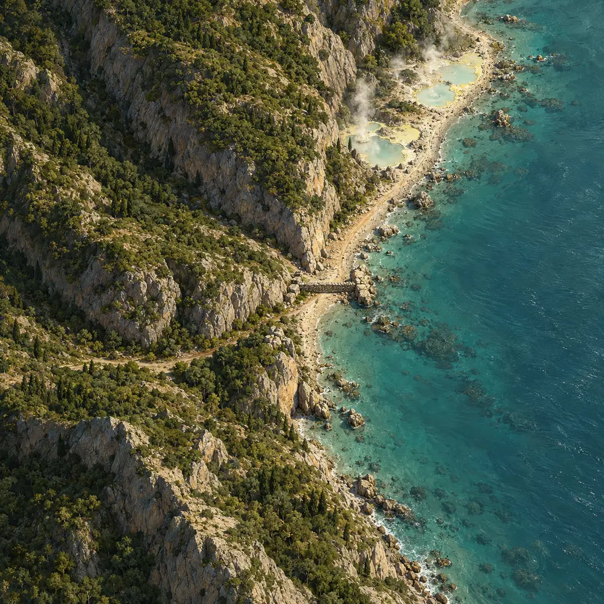
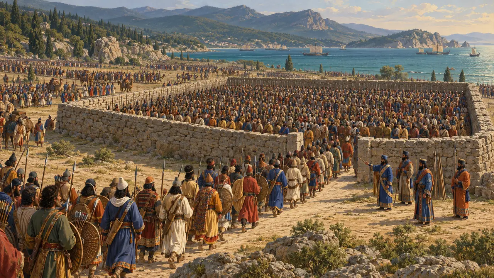
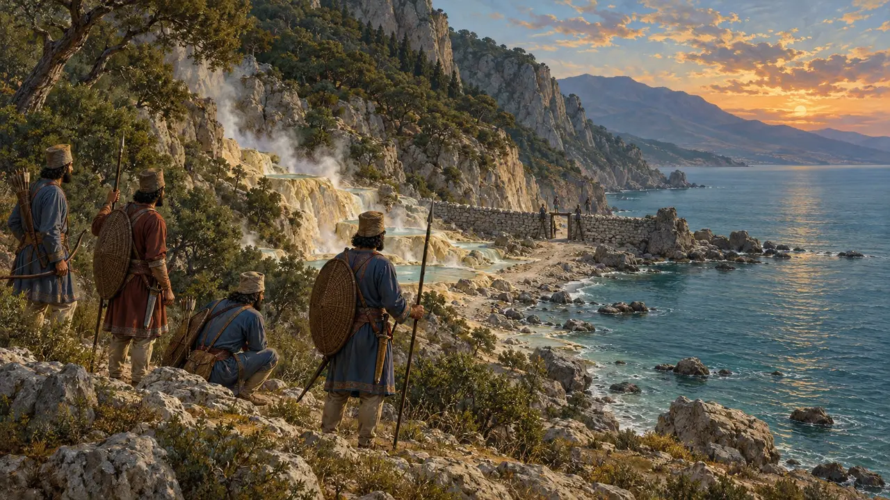
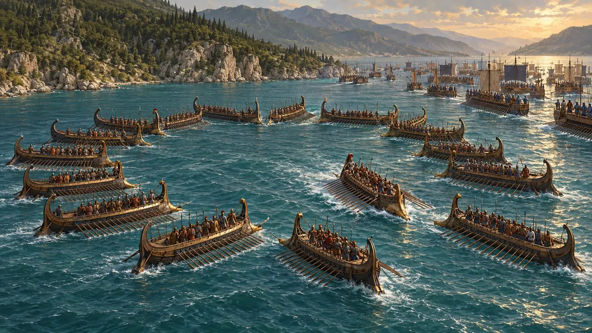
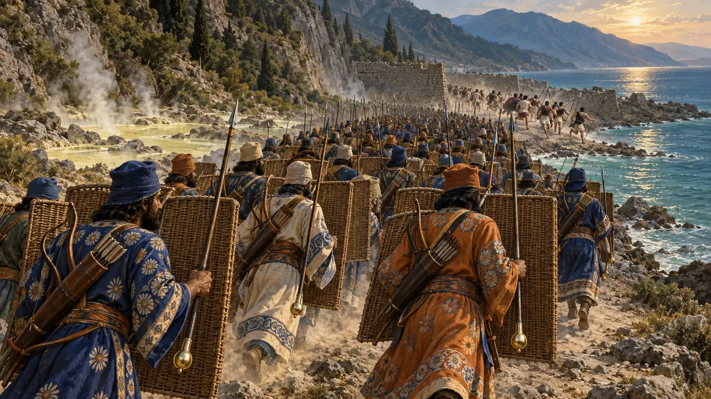
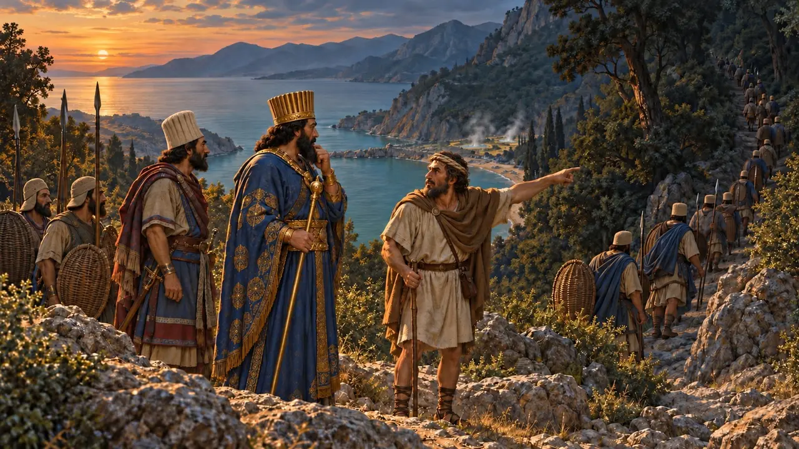
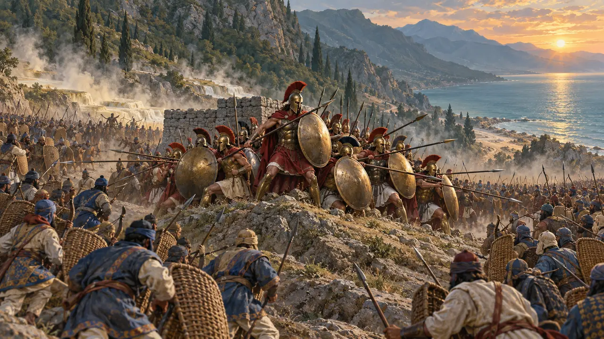
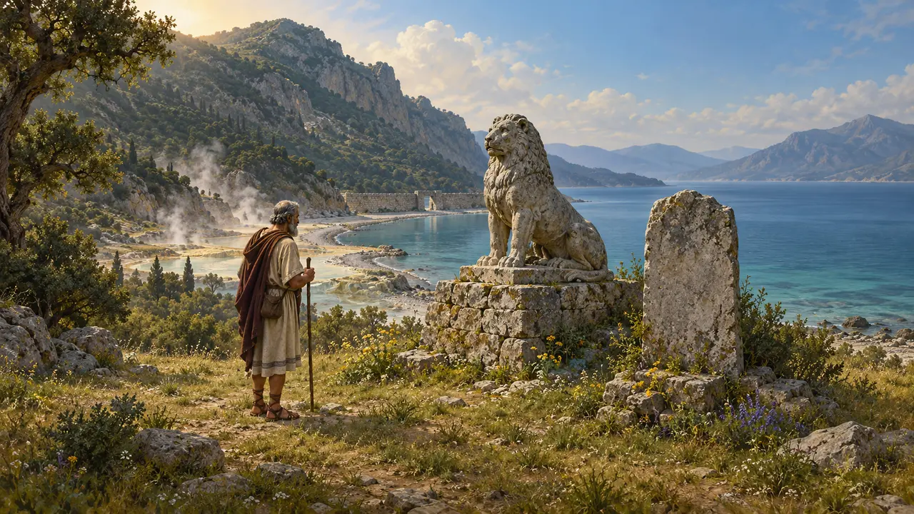
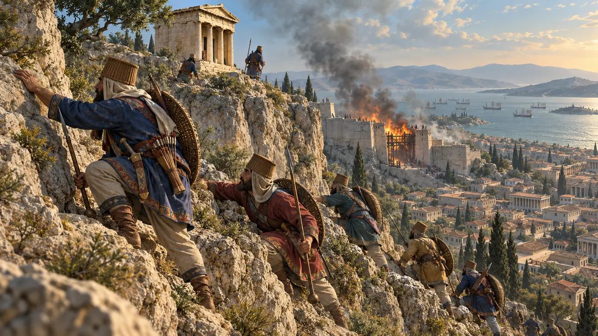

Nivel 10: Las Puertas Calientes · Termópilas · 480 a. e. c.
Las Puertas Calientes
Los griegos junto al muro de los focidios en el paso de las Termópilas.
Enciclopedia › La Historia
A finales del verano del 480 a. e. c., Leónidas de Esparta defendió el paso de las Termópilas con unos siete mil griegos mientras la flota combatía en Artemisio. Al cabo de tres días, un lugareño mostró a los persas un sendero de montaña. Leónidas murió con su retaguardia, y Jerjes marchó sobre Atenas.

- 480 a. e. c. Los griegos en el paso
- 480 a. e. c. Tormenta frente a Magnesia
- 480 a. e. c. Tres días
- 480 a. e. c. La toma de Atenas
- 480 a. e. c. Salamina

¿Qué tamaño tenía el ejército del Rey?
En disputaHeródoto cuenta 1.700.000 soldados de infantería, y un epitafio habla de tres millones. El abastecimiento, el agua y el espacio en los caminos lo hacen imposible; las estimaciones modernas oscilan entre unos 100.000 y 300.000 hombres en total.
En el juego: La convocatoria muestra la estimación moderna y aclara que se trata de una estimación.
Herodotus 7.60, 7.184-187, 7.228

El muro y los manantiales
En los documentosEl paso discurría entre la montaña y el mar, con manantiales calientes y un antiguo muro focense. Desde entonces el río ha arrastrado tanto limo que la costa se halla hoy a kilómetros de distancia. Heródoto cuenta que los ríos que encontraba la marcha quedaban secos de tanto beber.
En el juego: El decreto de las Termópilas pide pozos para la hueste.
Herodotus 7.176, 7.196; geological surveys of the Spercheius delta

Tormenta y batalla naval
Relato antiguoAntes de los combates, una tormenta frente a Magnesia sopló durante tres días y hundió cientos de naves del Rey. Después, en los mismos tres días que duró la lucha en el paso, la flota griega combatió en Artemisio, y cada frente protegía el flanco del otro.
En el juego: Una franja en la parte superior de la pantalla sigue la batalla de Artemisio día a día; una trirreme embestida con fuerza puede partirse por el centro, como describe Heródoto en Salamina (8.90).
Herodotus 7.188-191, 8.1-18 (8.15 for the same days)

Los Inmortales y la falsa retirada
Relato antiguoLos medos fueron rechazados, y después los Inmortales al mando de Hidarnes. Heródoto cuenta que los espartanos se volvían como si huyeran y luego giraban contra sus perseguidores.
En el juego: Los espartanos fingen la huida una vez; los Inmortales caídos vuelven a la cola de reclutamiento de un cuartel.
Herodotus 7.210-212


La última resistencia
Relato antiguoLeónidas despidió a la mayor parte del ejército y se quedó con sus 300 espartanos, 700 a. e. c. tespios y 400 tebanos. Lucharon en la pequeña colina del paso hasta ser arrollados. En 1939 los arqueólogos hallaron en esa colina numerosas puntas de flecha persas.
Herodotus 7.219-225; S. Marinatos, excavation of 1939

«Ven a tomarlas»
Leyenda posteriorLa célebre respuesta de Leónidas a la exigencia de entregar sus armas procede de Plutarco, seis siglos después. Heródoto sí recoge al espartano que, al oír que las flechas ocultarían el sol, dijo que así combatirían a la sombra.
Plutarch, Sayings of Spartans (Leonidas 11); Herodotus 7.226

La toma de Atenas
Relato antiguoLos atenienses habían abandonado su ciudad para refugiarse en Salamina y en las naves. Unos pocos defendieron la Acrópolis tras barricadas de madera hasta que los persas escalaron el acantilado junto a un santuario. Los templos fueron incendiados, como lo había sido Sardes.
Herodotus 8.50-55
Read next: the topics of Las Puertas Calientes
Batallas y acontecimientos
La travesía del Helesponto · La invasión de Grecia por Jerjes · La revista de tropas en Doriscos · La tormenta frente a Magnesia · La batalla de las Termópilas · La batalla de Artemisio
Edificios
Soldados y naves
Inmortal · Lancero cisio · Infante de marina egipcio · Hoplitas griegos · Soldados espartanos
Población
Jerjes · Leónidas · Demarato · Efialtes de Malis · Hidarnes
Pueblos
Los persas · Los macedonios · Los tesalios · Los tebanos · Los atenienses · Los espartanos · Los argivos · Los griegos de Istro · La Liga Helénica · Los focenses · Los tespios · Los locrios
Lugares
Sardes · Termópilas · Artemisio · Atenas · Salamina · Esparta · La Acrópolis de Atenas · El sendero de Anopea · Magnesia · Traquis
Fauna y clima
Ciervos · El jabalí · La cigüeña blanca · La liebre · El zorro · El lobo · Patos salvajes · El milano · El buitre leonado · La paloma bravía · La grajilla · La grulla · La golondrina · Gaviotas · Murciélagos · El mochuelo · La corneja cenicienta · Neblina matinal